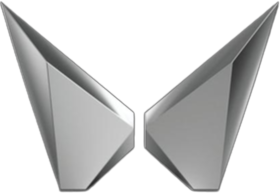
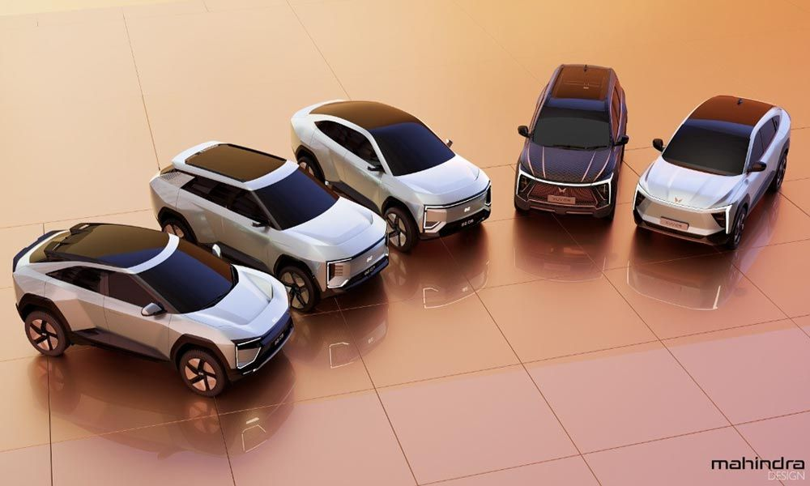

Mahindra & Mahindra Limited (M&M) is an Indian multinational automobile manufacturing corporation headquartered
in Mumbai, Maharashtra. The company was founded in 1945 and is part of the Mahindra Group, which is one of the
largest business conglomerates in India.
Mahindra & Mahindra is primarily known for its production of utility vehicles, such as the Mahindra Scorpio,
Mahindra Bolero, Mahindra Thar, and Mahindra XUV500. The company also manufactures commercial vehicles, including
trucks and buses, as well as agricultural equipment.
In recent years, Mahindra has expanded its global presence through strategic partnerships and acquisitions. The company
acquired SsangYong Motor Company, a South Korean SUV manufacturer, in 2011, and it also formed a joint venture with Ford
Motor Company to develop and manufacture vehicles in India and other emerging markets.
Mahindra has a strong commitment to sustainability and has implemented several initiatives to reduce its carbon footprint,
such as investing in renewable energy, developing electric vehicles, and implementing sustainable manufacturing practices.
Overall, Mahindra & Mahindra is a well-respected company in the automotive industry, known for its innovative products,
commitment to sustainability, and strong presence in both domestic and global markets.
